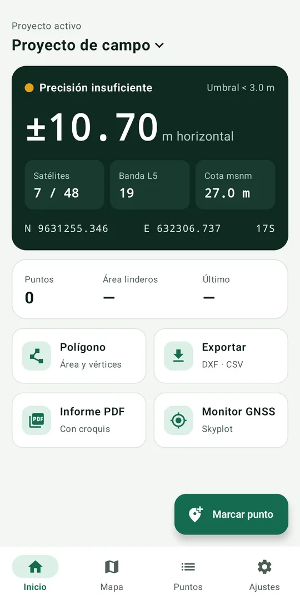
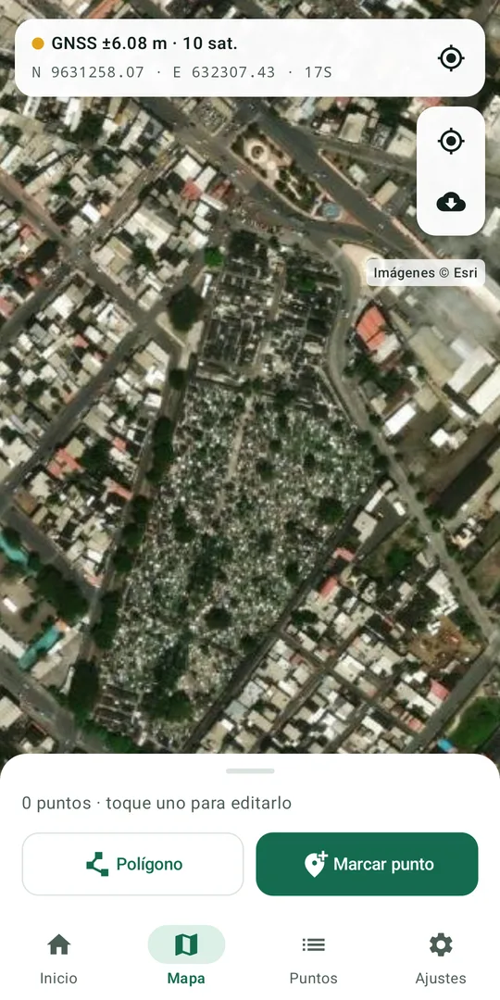

Mide tu terreno con el GPS de tu teléfono
AstroTrack marca puntos sobre el mapa satelital, calcula áreas y lleva tus datos a AutoCAD, Excel o Civil 3D. Para ingenieros, topógrafos, peritos y técnicos que necesitan ubicar linderos o medir un predio sin cargar equipo.


Lo que necesitas en campo
Pensada para trabajar con una mano, al sol, y llegar a la oficina con los datos listos para dibujar.
Puntos sobre el mapa
Marca puntos en el mapa satelital en tiempo real, con el círculo de precisión a la vista.
UTM y cota
WGS84 / UTM con zona automática o fija (por ejemplo 17S) y cota sobre el nivel del mar.
Más precisión
Promedia varias lecturas por punto y no deja guardar si la precisión no llega al límite que tú defines.
Áreas y perímetros
Área en m² y hectáreas. Detecta lados cruzados y ordena los vértices.
DXF y CSV
DXF para AutoCAD con capas por tipo de elemento y CSV en orden PNEZD para Excel o Civil 3D.
Informe PDF
Croquis, tabla de coordenadas y firma de responsabilidad, listo para adjuntar.
Monitor GNSS
Satélites, constelaciones y banda L5 para saber cuándo conviene medir.
Respaldo
Guarda y restaura todos tus proyectos en un solo archivo.
Así se ve
Capturas tomadas en un teléfono real en Pasaje, Ecuador.
Muy pronto en Google Play
AstroTrack ya está en revisión en la Play Store. Mientras tanto, puedes descargarla gratis desde esta página.
Instalación
Toma menos de un minuto.
1. Descarga
- Abre esta página desde el celular.
- Toca Descargar para Android.
2. Instala
- Abre el archivo descargado. Si Android lo pide, permite instalar apps desde el navegador, solo para este archivo.
- Si aparece Play Protect, elige Instalar de todos modos.
3. Empieza a medir
- Abre AstroTrack y permite la ubicación.
- Crea un proyecto, ve al mapa y toca Marcar punto.
Preguntas frecuentes
¿Qué tan precisa es?
Depende del GPS de cada teléfono, normalmente entre 1 y 5 metros. Los teléfonos con banda L5 suelen dar mejores resultados. AstroTrack sirve para trabajos referenciales y no reemplaza un levantamiento con estación total o GNSS diferencial.
¿Funciona sin internet?
Sí. El GPS y la captura de puntos funcionan sin datos. El mapa satelital necesita internet para cargar las imágenes de la zona.
¿Sirve fuera de Ecuador?
Sí. La zona UTM se calcula sola en cualquier país, o puedes fijarla en Ajustes.
¿Tiene costo?
No. Es gratis y muestra anuncios de Google AdMob.
¿Qué pasa cuando salga en Google Play?
La versión de Play viene firmada por Google. Para pasarte a ella, haz antes un respaldo de tus proyectos (Ajustes › Respaldo), desinstala esta versión, instala la de Play y restaura el respaldo.
¿Dónde quedan mis datos?
En tu teléfono. AstroTrack no tiene servidores ni pide crear una cuenta. Lee la política de privacidad.
Imágenes satelitales © Esri y sus colaboradores. AstroTrack es una herramienta de apoyo para trabajos referenciales; el usuario es responsable de verificar los datos antes de usarlos en documentos legales o de diseño.